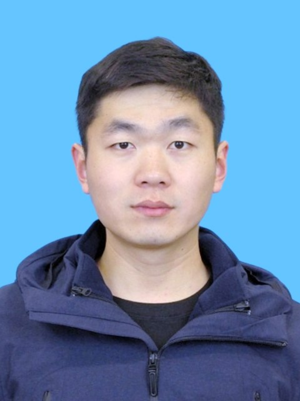

Resume: PDF (updated Jul. 2026)
Interests: Trustworthy Intelligence, AI Safety, Computer Vision
Contact: huiwei.truth@gmail.com, hui.wei@oulu.fi
Links: DBLP · Google Scholar · Github
Hui Wei is currently a postdoctoral researcher at the University of Oulu, Finland, working under the supervision of Prof. Guoying Zhao. Before this, he earned his Ph.D. in Computer Science from Wuhan University in 2025, supervised by Prof. Zheng Wang. His research focuses on trustworthy intelligence, with an emphasis on the trustworthiness of AI systems deployed in real-world scenarios.
His motto is: Doing Honest Work with My Own Hands.